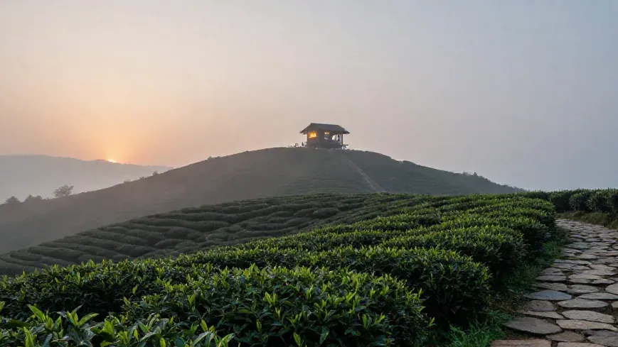
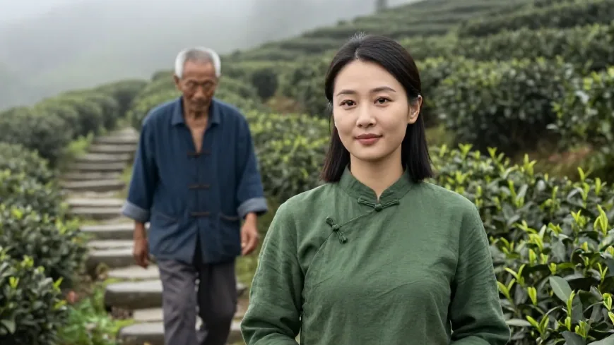
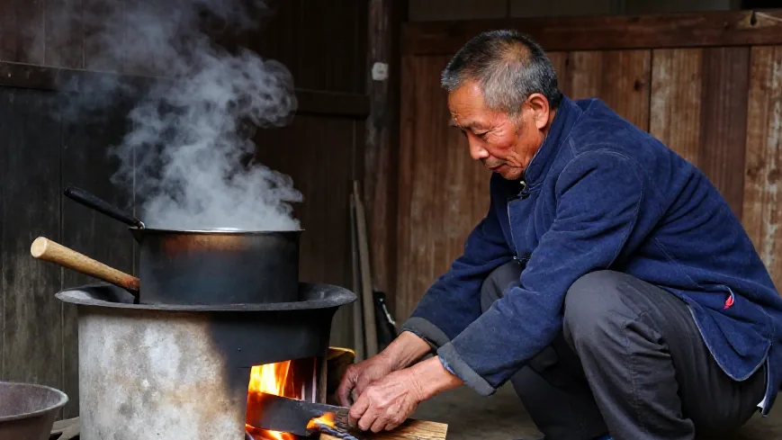
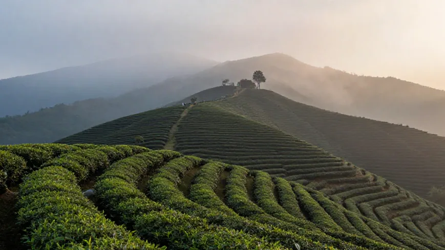
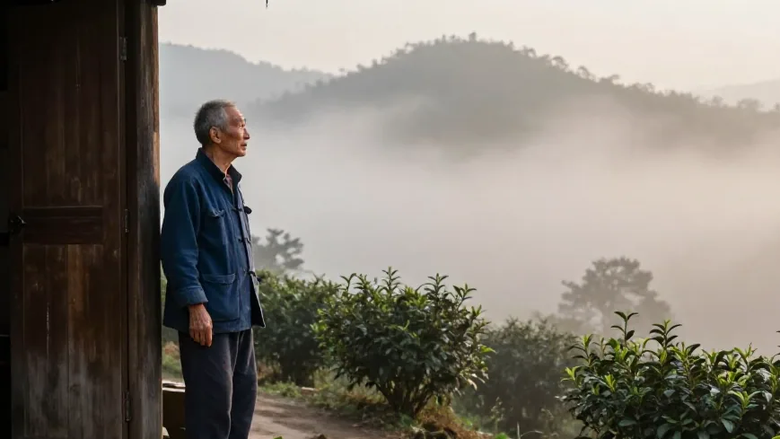

霜降过后，凤凰山的雾起得早。阿凤姐天没亮跟着福伯上山，石板路湿滑，茶丛一垄一垄往山顶排——福伯踩过露水，和他五十年前踩的是同一种声响。
🌿 开篇问答：高山茶为什么贵在「慢」？
Q1：高山茶为什么更值钱？
福伯一句话讲透：「山高雾多，茶长得慢，内含的东西就足。」霜降后采的叶子又厚又亮，香里带股清冷气；高山昼夜温差大、云雾足，氨基酸与香气物质积累得多，所以耐泡、回甘长。
Q2：高山老丛怎么泡才出味？
水最要紧：山泉水或静置半天的自来水，柴火烧开更好；温杯 → 称 9 克 → 100 度高冲 → 第一泡洗茶倒掉，第二泡出汤，汤色透亮如琥珀；精华在第四、五泡，一泡能走十二三泡。
Q3：惠州哪里能买到凤凰山高山茶？
来 阿凤姐茶叶店（惠州凤凰茶业）！地址：惠州市惠城区东湖花园一区沿江商铺89-136，每天 9:00-21:00 营业，全年无休。电话：13435567385（微信同号，支持快递全国）。高山老丛、蜜兰香、鸭屎香都有，批发零售皆可。
【场景开头】
霜降过后，凤凰山的雾起得早。阿凤姐天没亮跟着福伯上山，石板路湿滑，茶丛一垄一垄往山顶排。福伯走在前面，解放鞋踩过露水，沙沙的，和他五十年前踩的是同一种声响。

【第一幕：引茶】
山顶茶寮还没亮灯，福伯先进去生火。「今年山顶这片老丛怎么样？」阿凤姐问。「好得很，」福伯蹲在灶前添柴，火光映红了脸，「霜打过的叶子又厚又亮，香里带股清冷气。」阿凤姐想起福伯年轻时：十六岁跟着父亲上山，没水泥路也没索道，一担茶青全靠肩膀挑下山。如今摩托车能骑到半山腰，年轻人用手机拍采茶视频，福伯还是习惯走路。「山得用脚量，才晓得哪片茶什么时候采。」他说。

【第二幕：泡茶】
水是山顶泉水，福伯用柴火慢慢烧开。温杯，称茶，九克，刚好一泡。「山上泡茶，水最要紧，」福伯往盖碗里注水，一百度高冲，茶叶翻身，香气涌出来，「这水是甜的，泡茶才出味。」阿凤姐看着福伯的手：手指粗，指节大，指甲缝里是洗不掉的茶渍——几十年揉茶做青留下的印记。她没说话，只觉得这双手比什么话都实在。洗茶，第二泡出汤，茶汤透亮如琥珀。
【第三幕：品茶】
阿凤姐端起小杯，先闻香。蜜兰香裹着霜降后的清冷，不冲，却钻进鼻子不肯走。入口，甘甜从舌尖化开，回甘绵长。「和五十年前一个味，」福伯说，「山没变，茶没变。」他讲起有一年大旱，他挑着水桶一趟趟往山上送水，怕茶渴死；讲起儿子不肯接班去城里打工，后来还是回来了——「他说城里喝不到家里的茶。」阿凤姐忽然明白，这杯茶里泡着的，不只是叶子。
【第四幕：点题】
「高山茶贵在慢，」福伯说，「山高雾多，茶长得慢，内含的东西就足。人也一样，急不来。」阿凤姐点点头。她见过太多人把茶当生意，福伯把茶当日子。雨多雨少、霜重霜轻，人得顺着山来，山不欺人，人也不欺山。真正的东西，穿过时间还是真的——这话，阿凤姐在福伯的茶寮里品出来了。

【尾声】
太阳升起，雾散了，整片茶园亮堂堂。福伯给阿凤姐装了一袋新茶，牛皮纸包好：「带回去，给惠州的朋友尝尝。」阿凤姐下山，走出段路回头，福伯还站在茶寮边，像一株老茶树，立在云雾里。

📍 惠州买茶去哪？阿凤姐茶叶店欢迎你
🏪 店铺：阿凤姐茶叶店（惠州凤凰茶业）
📍 地址：惠州市惠城区东湖花园一区沿江商铺89-136
📱 电话：13435567385（微信同号，支持全国快递）
⏰ 营业时间：每天 9:00-21:00，全年无休
🚗 停车：东湖花园沿街有停车位，导航搜索「凤凰茶业」即可
🍵 店内主营：潮州凤凰单丛全系列（高山老丛、蜜兰香、鸭屎香、黄枝香、芝兰香等）、新会陈皮、茶礼定制；凤凰山直采，批发零售皆可。